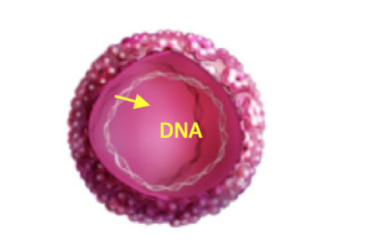

一份来自HPV的自白书
Hi，大家好，我是HPV，我的中文名字叫人乳头瘤病毒。话不多说，先上自拍。喏，我长这样。

是不是很美丽？其实，我不单外表美，我的内在也很美哦！我的内在长这样↓
跟你们人类一样，我也是有DNA哒！这2根成环的“链子”就是我的DNA，我的DNA具有很强的亲（chuan）和(ran)力(xing)，也是我与你们人类交朋友的“秘密武器”。我最喜欢年轻姑娘了，可她们貌似都不太喜欢我，一想到我就不寒而栗，在她们眼中，我就是糖衣炮弹，是坏人。说到这里，有必要向大家介绍下我的家族了。
我有一个超级大的伐木累，有超过100多位的兄弟姐妹，它们中有的比较调皮捣蛋，比如，HPV6、11、42、43、44等等，虽然它们接近人类，会带来一些与外生殖器湿疣等相关的疾病，但它们对人类没有太大的恶意，如果人类采取一些措施的话，它们会灰溜溜地离开的。
我也承认，在我的家族里也存在着一些恐怖分子，它们是造成宫颈癌的罪魁祸首……比如女孩子们谈到就会色变的HPV16和HPV18，在全球，由它俩所引起的宫颈癌占所有感染类型的71%，在中国，这一数字甚至飙升至84.5%！
介绍完我的家族，就再来给大家介绍下我是如何与人们发生“亲密接触”的吧！其实，我无处不在哦，在你们做羞羞的事情的时候、在卫生间、在浴缸……我都有可能会进入你的身体里。还有，不要以为只有和多个人做羞羞的事情我才会出现，哪怕你们认定彼此是对方的真爱，我也有可能会进入你们的身体哦~如果我不小心进入了准妈妈的身体里，那只能跟小宝宝说sorry了……
如果不小心被我或者我的兄弟姐妹们盯上了，姑娘们也不要太过于害怕，它们中约50%会在6个月内被人体免疫系统清除，近90%会在几年内被人清除出体外的！假如不幸被我们家族的恐怖分子盯上了，那就要多加小心了，因为它们很有可能会发展为癌前病变或者宫颈癌，而这个过程仅需要10年左右的时间……
最后，我想说，我把我的背景、家族情况等等都告诉你们了，如果哪位姑娘还是不幸感染了宫颈癌，那你对我应该是真爱吧……
Ref:
de Sanjose S, Quint WG, Alemany L.Human papillomavirus genotype attribution in invasive cervical cancer: a retrospective cross-sectional worldwidestudy. Lancet Oncol. 2010 ;11(11):1048-56.
2 Chen W, Zhang X, Molijn A.Human papillomavirus type-distribution in cervical cancer in China: the importance of HPV 16 and 18. Cancer Causes Control. 2009 ;20(9):1705-13.
3 Moscicki AB, Schiffman M, Burchell A et al. Updating the natural history of human papillomavirus and anogenital cancers. Vaccine. 2012;30 Suppl 5:F24-33.